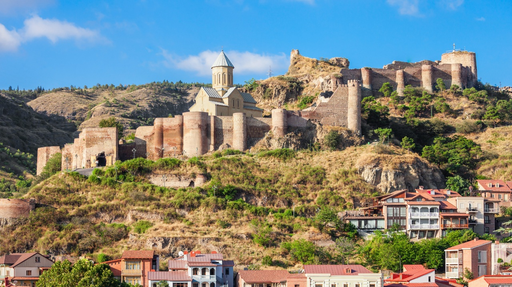
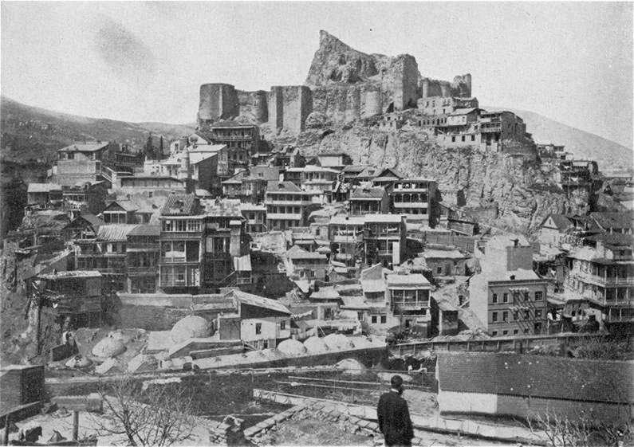
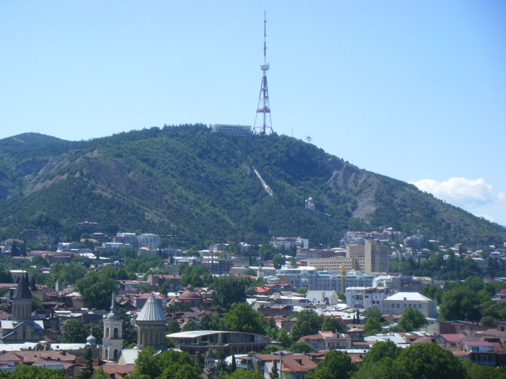
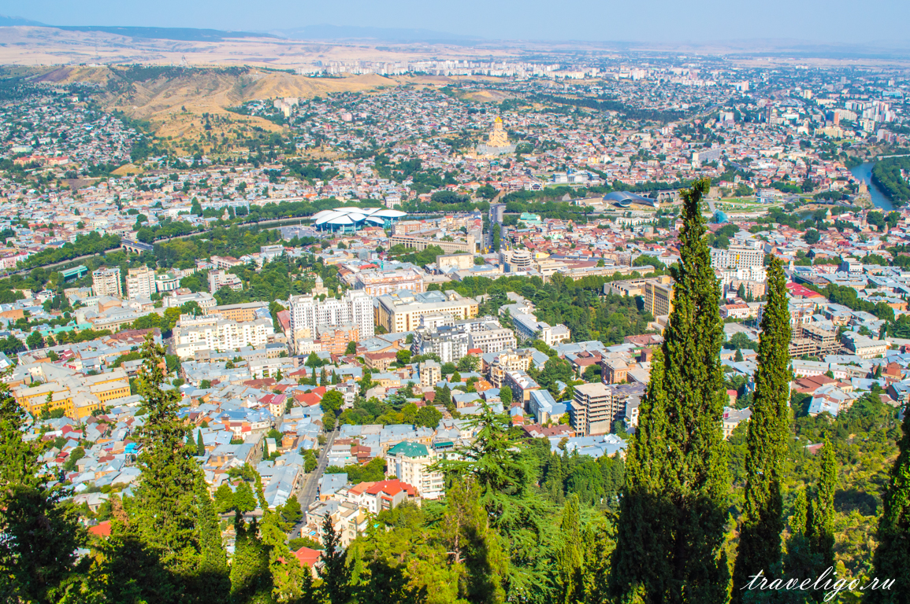
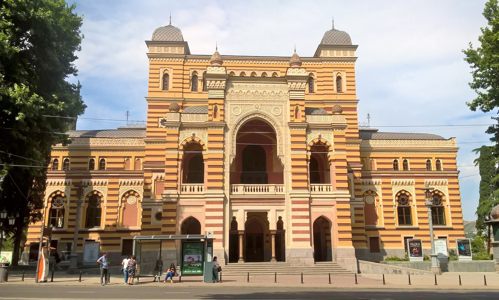
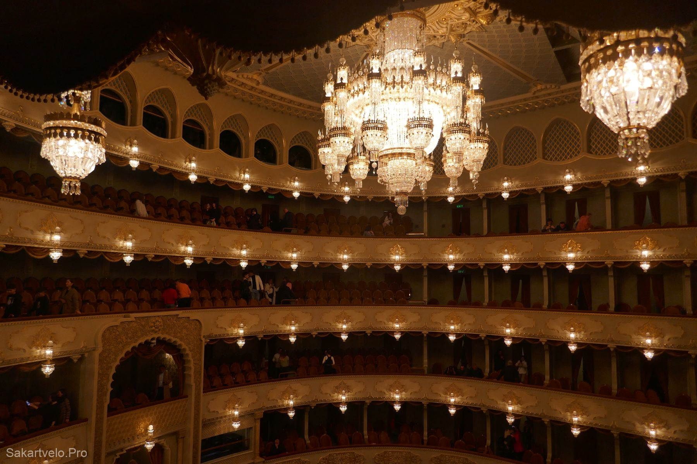

თბილისის ღირსშესანიშნაობები
- ნარიყალა: უძველესი ციხე, რომელიც მდებარეობს ბორცვზე, რომელიც თბილისს გადაჰყურებს.
- ძველი ქალაქი: ისტორიული ქალაქის ცენტრი ვიწრო ქუჩებით და უძველესი არქიტექტურით.
- თბილისის ბოტანიკური ბაღი: ულამაზესი ბაღი მრავალი მცენარითა და ყვავილით.
- მშვიდობის ხიდი: თანამედროვე საცალფეხო ხიდი უნიკალური არქიტექტურით.
- მეტეხის ტაძარი: უძველესი ტაძარი მდინარე მტკვრის ნაპირებზე.
- მთაწმინდა: ბორცვი პანორამული ხედებით ქალაქზე და გასართობ პარკზე.
- თბილისის ოპერისა და ბალეტის თეატრი: ულამაზესი შენობა, სადაც იმართება სპექტაკლები და კონცერტები.
ნარიყალა
 უძველესი დროის ციხესიმაგრე, რომელიც თბილისსა და მდინარე მტკვარს გადაჰყურებს. წყაროებში პირველად მოხსენიებულია 1772 წელს გერმანელი მოგზაურ იოჰან გიულდენშტედტთან. ციხესიმაგრე გალავნის ორი სექციისგან შედგება, რომელიც ციცაბო ამაღლებაზე მდებარეობს გოგირდის აბანოებსა და ბოტანიკურ ბაღს შორის. ნარიყალას ქვემო ეზოში ახლად აღდგენილი წმ. ნიკოლოზის სახელობის ეკლესია და მცირე კაფე მდებარეობს. ლეგენდის მიხედვით ციხე როგორც თვით ქალაქი მეფე ვახტანგ გორგასალის დაფუძნებულია
ძველი თბილისი


ქალაქ თბილისის ისტორიული ნაწილი, დაახლოებით მოიცავს იმ უბნებსა და დასახლებებს, რასაც 1936 წლამდე „ტფილისი“ ეწოდებოდა. ძველ თბილისშია თავმოყრილი თბილისის ღირსშესანიშნაობების უმეტესობა და შესაბამისად, ტურისტული მიზიდულობის მთავარი ცენტრია. ძველი თბილისი 2007 წლიდან 24 ოქტომბრიდან იუნესკოს მსოფლიო მემკვიდრეობის ძეგლობის კანდიდატია.
თბილისის ბოტანიკური ბაღი


ისტორიული ბაღი თბილისში, სოლოლაკის ქედის სამხრეთით, მდინარე წავკისისწყლის (ლეღვთახევის) ხეობაში. ბოტანიკურ ბაღში წარმოდგენილია საქართველოსა და მსოფლიოს სხვადასხვა რეგიონების ფლორის მდიდარი კოლექციები. ბაღის ფარგლებში წავკისისწყალზე რამდენიმე ხიდია გადებული.მათ შორის გამოირჩევა 1914 წელს აშენებული თაღოვანი ხიდი ჩანჩქერის თავზე. ასევე ინახება საქართველოსა და კავკასიაში უნიკალურ მცენარეთა ნაკვეთები, ტროპიკული ორანჟერეა და წითელ წიგნში შეტანილი მცენარეები. ბოტანიკური ბაღის ფართობია 128 000 ჰექტარი.
მშვიდობის ხიდი


საფეხმავლო ხიდი მდინარე მტკვარზე, თბილისში, მეტეხისა და ბარათაშვილის ხიდებს შორის. ერთმანეთთან აკავშირებს ერეკლე II-ის ქუჩასა (მიმდებარე სანაპიროსთან ერთად) და რიყეს. ხიდი აიგო ქ. თბილისის მერიის დაკვეთით 2009-2010 წლებში. ოფიციალურად გაიხსნა 2010 წლის 6 მაისს. მშვიდობის ხიდი მე-11 ხიდია, თბილისის ტერიტორიაზე მდინარე მტკვარზე აგებულთაგან და ერთადერთია, რომელიც თბილისში XXI საუკუნეში აშენდა. ხიდი ყურადღებას იპყრობს ექსპრესიული მოხაზულობით, მასალითა და ტექნიკური აღჭურვილობით, მისი არქიტექტურული სტილის ისტორიულ გარემოსთან კონტრასტით. ხიდის სეართო ღირებულებამ შეადგინა 12,5 მლნ ლარი, რომელიც გამოყო ქალაქის ბიუჯეტმა.
მეტეხის ტაძარი


ეკლესია ცენტრალურ-გუმბათოვანია. მისი კედლების წყობა კლასიკურ ქართულ ტრადიციებს ემყარება. ის თავიდან მთლიანად იყო შემოსილი თლილი მომწვანო-რუხი ქვით, მოგვიანებით კი აღდგენილია აგურით. ტაძრის გეგმა წარმოადგენს აღმოსავლეთით შვერილი ნახევარწრიული აფსიდებით დასრულებულ მართკუთხედს, რომლის შუაში აღმართულია ოთხ ბურჯზე დაფუძნებული გუმბათი. აღმოსავლეთის ცენტრალურ შვერილ აფსიდს დიდი ჯვარი და ორი ნატიფად მოჩუქურთმებული რომბი ამშვენებს. ესაა სამთავისის ტაძრის საფასადო მორთულობის ცნობილი კომპოზიცია. საუკუნეთა მანძილზე ტაძრის არქიტექტურამ ბევრი ცვლილება განიცადა. XVII -XVIII საუკუნეებში აგურითაა აღდგენილი ოთხივე ბოძი, დასავლეთი პატრონიკე, კამარები, გუმბათი და სხვა. ერეკლე მეფის დროსაა აღდგენილი სამხრეთი კედლის დიდი ნაწილი. არის XIX საუკუნის ფენებიც.
მთაწმინდა
 მდებარეობს მთაწმინდის ქედის აღმოსავლეთ ნაწილში, მდინარე მტკვრის მარჯვენანაპირეთში. სიმაღლე ზღვის დონიდან 719.8 მ. აგებულია ზედაეოცენური ქვიშაქვებითა და თიხებით. უშუალოდ ეკვრის თბილისს და არსებითად შეადგენს ქალაქის განუყოფელ ნაწილს. მთაწმინდის ზედა ნაწილი წარმოადგენს საკმაოდ ვრცელ პლატოს.XIX საუკუნის დასაწყისამდე მთაწმინდა ტყით იყო შემოსილი. ახლანდელი ტყე ხელოვნურია. პლატოზე გაშენებულია კულტურისა და დასვენების პარკი, რომელიც საავტომობილო და საბაგირო გზით უკავშირდება ქალაქს; გაყვანილია ფუნიკულიორი. მთაწმინდის აღმოსავლეთ კალთაზეა ქართველ მწერალთა და საზოგადო მოღვაწეთა მთაწმინდის პანთეონი. მთაზე დგას სატელევიზიო ანძა.
თბილისის ოპერისა და ბალეტის თეატრი
 საქართველოს მთავარი მუსიკალური თეატრი, თბილისის ერთ-ერთი ღირსშესანიშნაობა და ქალაქის კულტურული ცხოვრების ერთ-ერთი განმსაზღვრელი ცენტრი უკანასკნელი საუკუნენახევრის მანძილზე. დაარსდა 1851 წელს. თბილისის ოპერის თეატრის სცენაზე წარმოდგენილი პირველი ქართული ოპერა იყო რევაზ გოგნიაშვილის „ქრისტინე“ (1918 წლის 17 ივნისი)